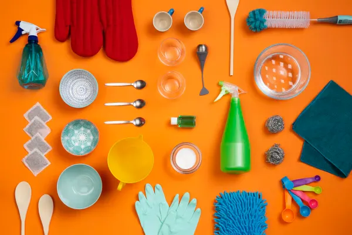
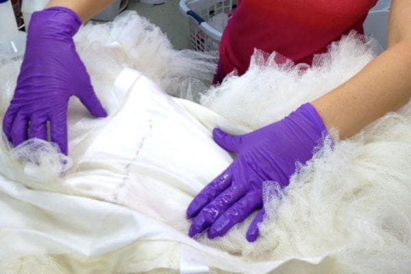
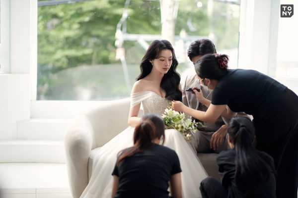

Đăng ngày: 02/09/2023 | Tác giả: Mỹ Hạnh

Sau ngày trọng đại, chiếc váy cưới không chỉ đơn thuần là một bộ trang phục. Nó chứa đựng những ký ức đầy cảm xúc, là minh chứng cho khoảnh khắc thiêng liêng và hạnh phúc của đời người. Vì vậy, việc giữ gìn và bảo quản váy cưới luôn được nhiều cô dâu quan tâm, đặc biệt là những người muốn lưu giữ chiếc váy như một kỷ vật hoặc truyền lại cho thế hệ sau.
“Một chiếc váy cưới được chăm sóc đúng cách có thể giữ được vẻ đẹp trọn vẹn suốt nhiều năm.”
Tuy nhiên, không phải ai cũng biết quy trình bảo quản đúng chuẩn. Từ việc giặt, xử lý vết bẩn đến cách cất giữ lâu dài, mỗi bước đều cần tỉ mỉ và chính xác để tránh làm hỏng chất liệu. Bài viết dưới đây sẽ giúp bạn hiểu rõ cách chăm sóc chiếc váy cưới yêu quý của mình.
1. Xử Lý Ngay Sau Khi Tiệc Kết Thúc
Thời điểm sau khi buổi tiệc kết thúc là lúc chiếc váy cưới “mệt mỏi” nhất: phấn trang điểm, đồ ăn, bụi bẩn và thậm chí là vết xước có thể bám lên vải. Do đó, cô dâu nên xử lý sớm nhất có thể.
- Treo váy ngay để giữ form và tránh nhàu nát.
- Kiểm tra vết bẩn: phấn, rượu vang, đồ ăn… để ghi chú vị trí.
- Không gấp mạnh vì có thể gây gãy nếp hoặc hỏng chi tiết ren.
- Tránh tự giặt nếu váy có chất liệu cao cấp như satin, tulle, ren 3D.
Nếu váy bị ướt (do mưa, mồ hôi…), hãy phơi ở nơi thoáng gió, tránh tuyệt đối ánh nắng trực tiếp.
2. Vệ Sinh Váy Cưới Đúng Cách
Việc giặt váy cưới không giống với giặt quần áo thông thường. Mỗi chất liệu yêu cầu phương pháp riêng, đặc biệt là váy có nhiều lớp hoặc có đính kết thủ công.
2.1. Mang Váy Đến Tiệm Chuyên Nghiệp
Đây là lựa chọn tốt nhất vì các tiệm giặt chuyên dụng có:
- Máy móc phù hợp với chất liệu nhạy cảm
- Dung dịch làm sạch an toàn, không gây phai màu
- Kỹ thuật xử lý vết bẩn đúng chuẩn
- Kinh nghiệm phục hồi các vết rách nhẹ
2.2. Tự Giặt Tại Nhà (Nếu Váy Không Quá Cầu Kỳ)
Chỉ áp dụng với các kiểu váy đơn giản, ít lớp, không đính đá.
- Dùng nước lạnh để tránh co vải.
- Dùng sữa tắm trẻ em hoặc xà phòng nhẹ.
- Không vò mạnh – chỉ dùng tay ép nhẹ.
- Phơi trong bóng râm, để ráo tự nhiên.
Lưu ý: Tuyệt đối không dùng máy giặt vì có thể làm hỏng cấu trúc váy.
3. Phục Hồi Chi Tiết Trang Trí
Sau một ngày dài, các chi tiết như ren, hạt cườm, sequin hoặc hoa 3D rất dễ bị bung, xước hoặc lệch. Việc phục hồi kịp thời giúp váy không xuống cấp theo thời gian.
- Khâu lại hạt đính lỏng trước khi cất giữ lâu dài.
- Kiểm tra lớp lót – lớp này quyết định form váy.
- Phục hồi ren 3D bằng kim chuyên dụng để không tạo vết thừa.
- Ủi hơi nhẹ để tạo lại phom váy ban đầu.
Nếu váy quá hư tổn, bạn nên mang đến cửa hàng nơi bạn thuê / mua để được phục hồi bởi thợ chuyên nghiệp.
4. Bảo Quản Lâu Dài
Đây là bước quan trọng nhất để giữ váy cưới như mới trong nhiều năm. Một số cô dâu chọn bảo quản để làm kỷ vật, số khác muốn truyền lại cho con gái sau này – và điều đó hoàn toàn có thể nếu bạn chăm sóc đúng cách.
4.1. Dùng Túi Vải Chuyên Dụng
Không dùng túi nilon vì dễ gây ẩm mốc, ố vàng. Túi vải giúp váy “thở” và giữ được độ mềm.
4.2. Dùng Hộp Bảo Quản Acid-free
- Không gây ố vàng theo thời gian.
- Giúp váy giữ màu trắng tự nhiên.
- Tránh côn trùng và bụi bẩn.
4.3. Chọn Nơi Cất Giữ Lý Tưởng
- Nơi khô ráo, tránh ánh nắng và nhiệt độ cao.
- Không để sát sàn nhà hoặc gần ống nước.
- Không treo lâu nếu váy nặng – dễ làm giãn vải.
Với váy nhiều lớp hoặc váy công chúa, tốt nhất nên cất trong hộp nằm để tránh tình trạng váy biến dạng.
5. Lưu Ý Quan Trọng Để Váy Luôn Như Mới
- Kiểm tra váy định kỳ 6–12 tháng một lần.
- Thay giấy lót trong hộp để tránh ố vàng.
- Không xịt nước hoa hoặc chất thơm lên váy khi cất giữ.
- Đặt túi hút ẩm tự nhiên trong khu vực cất váy.
- Nếu phát hiện mốc, phải xử lý ngay để tránh lan rộng.
6. Kết Luận
Chiếc váy cưới là kỷ vật chứa đầy cảm xúc – và bạn hoàn toàn có thể giữ nó như mới trong nhiều năm nếu tuân theo các bước chăm sóc đúng cách. Từ việc xử lý ngay sau buổi tiệc, vệ sinh cẩn thận, sửa chữa chi tiết đến bảo quản lâu dài, mỗi bước đều góp phần duy trì vẻ đẹp của chiếc váy.
Hãy nhớ rằng: chăm sóc váy cưới cũng là cách bạn trân trọng những khoảnh khắc ngọt ngào đã trải qua.